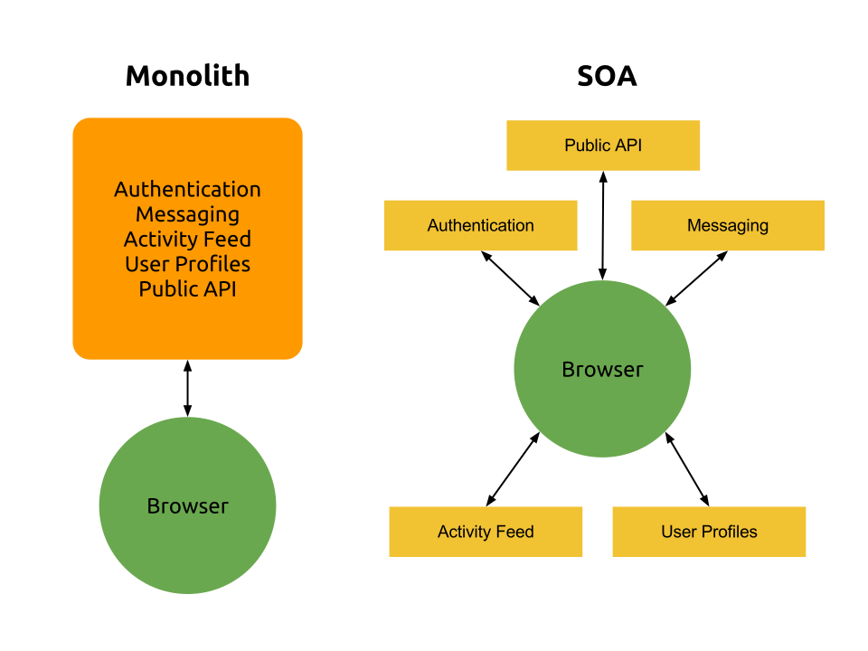

Building Modular, Scalable Web Apps?
Of CORS!
Michael Bleigh
RubyConf 2012
Follow Along!
http://mbleigh.github.com/cors-talk
Cross
Origin
Resource
Sharing
Cross-Domain AJAX? You mean like JSONP?
Warning: Like all good things, doesn't work well in IE < 10
SOA in the Browser
Public API + CORS =

Access Control Headers
Learn MoreOPTIONS Preflight Request
Triggered when request is not GET or has custom headers.
Access-Control-Allow-Origin
Acceptable origin domain or * to accept all origins.
Access-Control-Allow-Origin: *
Access-Control-Allow-Origin: https://api.yourapp.comAccess-Control-Allow-Methods
Comma-separated list of acceptable methods.
Access-Control-Allow-Methods: GET, POST, PUTAccess-Control-Expose-Headers
Comma-separated list of headers the browser can view.
Access-Control-Expose-Headers: X-My-Header, X-Your-HeaderAccess-Control-Allow-Headers
Used in preflight request to indicate what headers can be used in real request.
Access-Control-Allow-Headers: X-My-Header, X-Your-Header

Advantages
- Scalability
- Reusabiltiy
- Flexibility
- Fault Tolerance
- Clean Boundaries
Disadvantages
- Initial Complexity
- Cross-Service Communication
- Lack of Framework
Pre-Scale SOA
Fully break out services as scale and complexity demand it.
# in config.ru
run Rack::Cascade.new([
MyApp::ServiceOne,
MyApp::ServiceTwo,
MyApp::ServiceThree
])Keep it Light(weight)
Frameworks like Sinatra and Grape are a little easier to break apart than Rails apps.
Rack::Cors and Done
# in Gemfile
gem 'rack-cors', require: 'rack/cors'
# in application or config.ru
use Rack::Cors do
allow do
origins '*'
resource '/public/*'
end
allow do
origins 'localhost:3000', 'app.example.com'
resource '/private/*',
methods: [:get, :post, :put, :delete, :options, :patch],
headers: 'x-special-header',
expose: ['X-Special-Response-Header']
end
end
endLet's Dig In!
View on GitHubQuick Recap
- The browser runs the show
- Services can talk to each other
- Find the right balance
What's so awesome?
- Lower barrier to entry
- Mashups without servers
- Services can become public APIs
- Same burden on you, less burden on your users
Example: Divshot Alloy
- REST API for compiling CSS from SASS, LESS, and Stylus
- Created for Divshot, open sourced and run for free
Famous Examples
- GitHub: Entire API can be accessed via CORS
- Amazon S3: Uploading now possible via S3.
Handling Authentication
- Can't count on secrets
- Still want to identify application
- GitHub's Solution: Only allow CORS requests from domains of registered applications